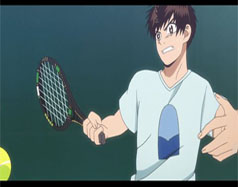
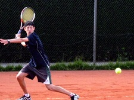
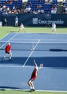

In tennis, every point begins with a serve. The serving player stands at the baseline, on the right side of the small dash in the middle of the baseline and has to hit the ball into the service box diagonally opposite them.
If they miss the box, they are given one more chance to get it in before the point is forfeit. If the player hits the net and then makes it in, it is referred to as a "let" and the entire serve is a do-over; two lets counts as a double-fault, A.K.A. a forfeit point.
The opposing player must let the ball bounce in the service box once before hitting it or the point is forfeit. For every point here on the ball may be hit directly out of the air or after bouncing. Gameplay continues like this until either the ball lands out of bounds or bounces a second time after being succesfully hit in.
As I stated earlier, anywhere within the bounds of the boxes on the court(with the exception of the alleys) is considered in bounds, including hitting the lines creating those boxes. In the event that the opposing sides cannot agree whether or not a ball was in, the side where the ball landed makes the final call unless an official referee or line judge is present.
After each point, players switch between the left and right sides of the court so as to allow them to both receive and serve on both the left and the right. When the game enters deuce, The receiving player may decide which side the ball is served to.
The same player continues serving until the game is decided. After a game has been won, the player who received in the previous game serves, and vice versa.

In terms of form used for serving, technically speaking, as long as the ball is in the air when it is served and the serve lands in bounds then it is considered legal.
Serves are typically made overhand, however in some rare cases, professionals have been known to throw in an underhand serve to throw off their opponents.
For form used in gameplay, this varies between players, however in terms of orthodox methods the main strokes used for playing are
forehand, backhand, overhead, volley, full swing, and smash. These are largely self explanatory so I will only give a brief overview.
Forehand swings are for hitting on the player's dominant hand side.
Backhands are two handed swings on the indominant side.
Overhead is a swing made to catch a shot over the player's head and typically send it deep in the opponent's court.
Volley is a shot made up at the net, typically very quickly and lightly to try to overcome the opponent's reaction time.
Full swing is a swing, usually with both hands, at full power used to reduce the strength of your opponents return or break their form.
A smash is a finishing move wherein the shot is hit overhead very quickly and powerfully either at the opponents feet or into open court to effectively end a point.

Doubles tennis has the same rules as singles, however the playstyle is very different. In doubles tennis, there are two players on either side.
The easiest way to describe doubles tennis is simply to contrast it to singles.
First, as opposed to singles, in doubles tennis the alleys are considered to be in bounds. This is mainly to accommodate for the larger amount of space taken up by the increase in players.
Next is serving. In doubles tennis partners are lined up side by side and staggered. One player is placed at the baseline, while the other is up at the net. On the opposing team, the player diagonally opposite the server is the one at the baseline as well as the one who must receive the serve. If the other player returns the serve instead the point is forfeit.
In between points the server switches between left and right as they do in singles, as does their partner. The opposing team, however, shuffles vertically. In other words: The player who was receiving moves up to the net to "volley" and the player who was volleying moves back to receive.
As it does in singles, the serve switches sides inbetween games. In doubles, the player who was on the right hand side of the court is now the server; in the next game the serve transfers back to the first pair, however, now the player who did not serve in the first game will serve. The game continues in like fashion unitl the match is won.